Cada una de estas mascotas fue rescatada de situaciones de abandono, maltrato o calle, para recibir una segunda oportunidad. Conoce a nuestros perros y gatos en adopción y ayúdanos a encontrarles un hogar responsable y lleno de amor.
Perros y gatos en adopción
Perritos en adopción
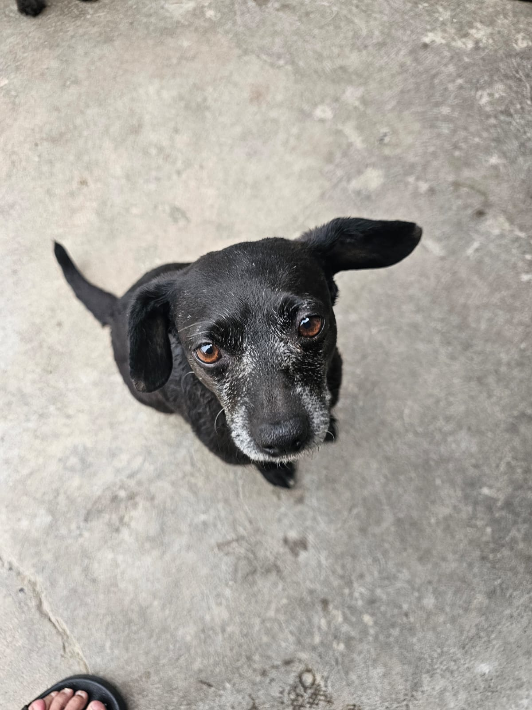
Petunia
4 años - Hembra
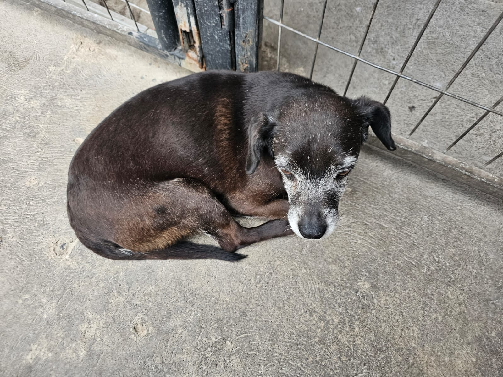
Martin
10 años - Macho
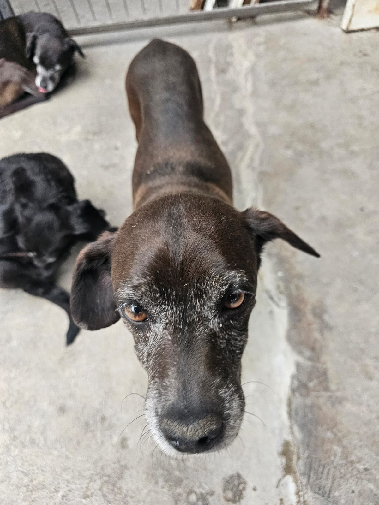
Coraje
6 años - Hembra
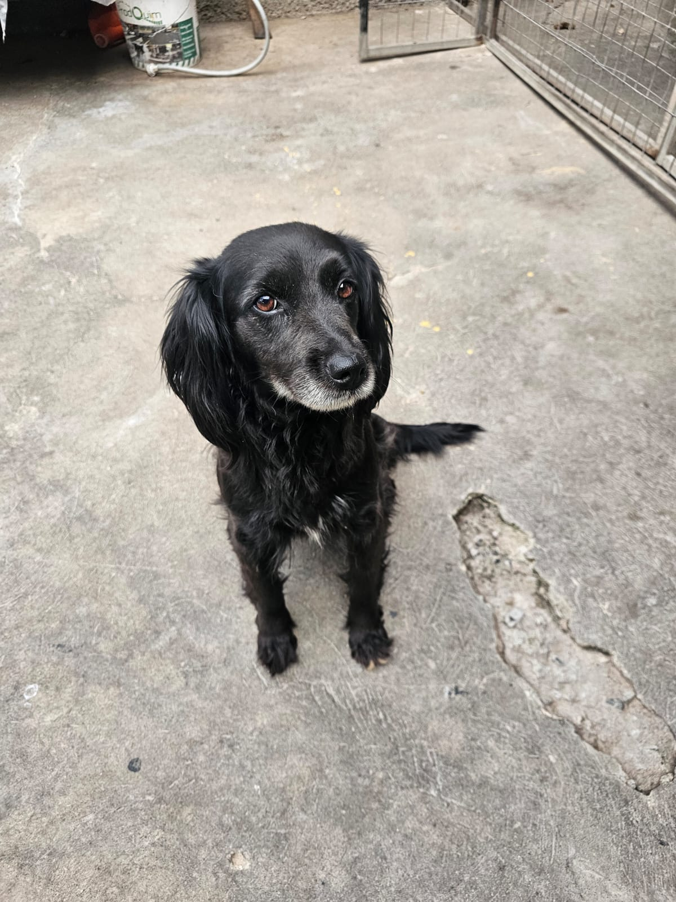
Peluca
4 años - Hembra
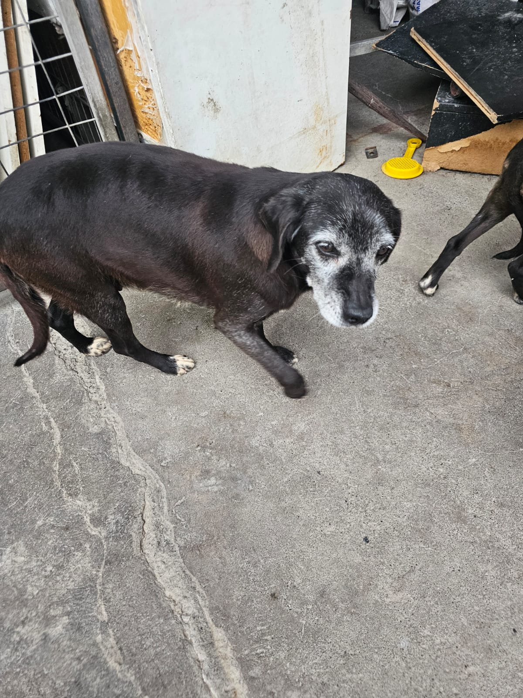
Botas
9 años - Hembra
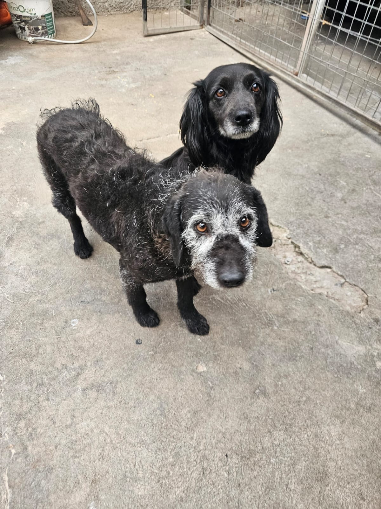
Rodomiro
4 años - Macho
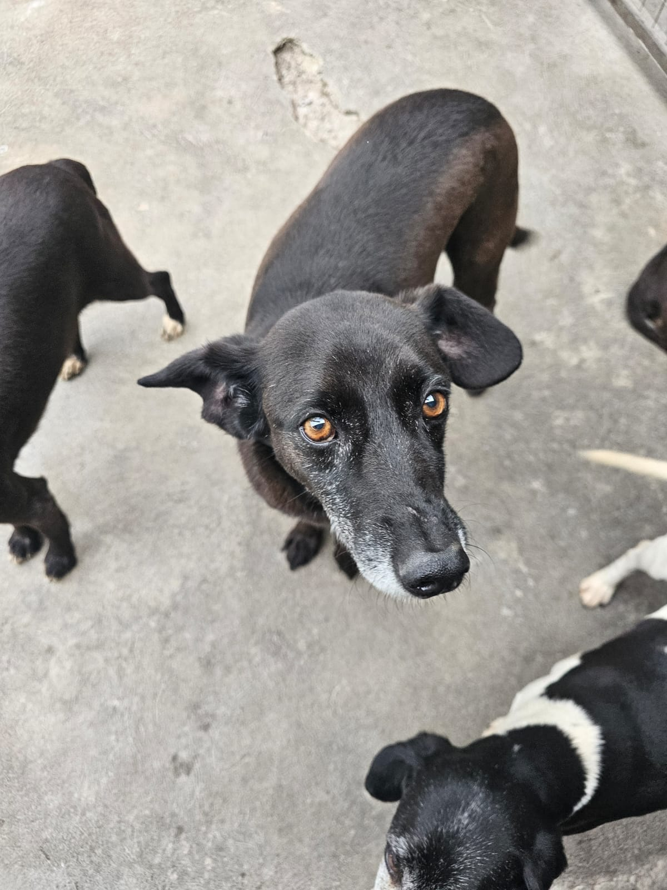
Pituco
4 años - Macho
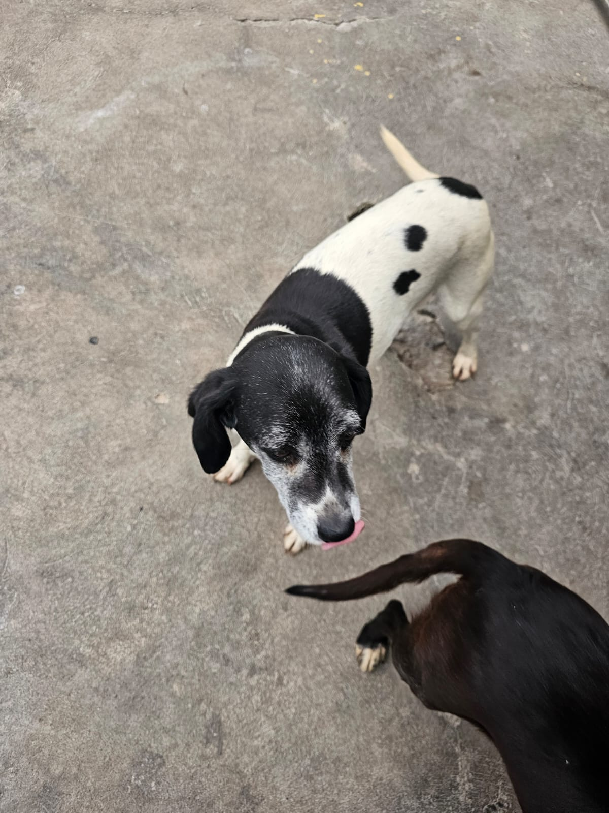
Colun
6 años - Hembra
Gatitos en adopción
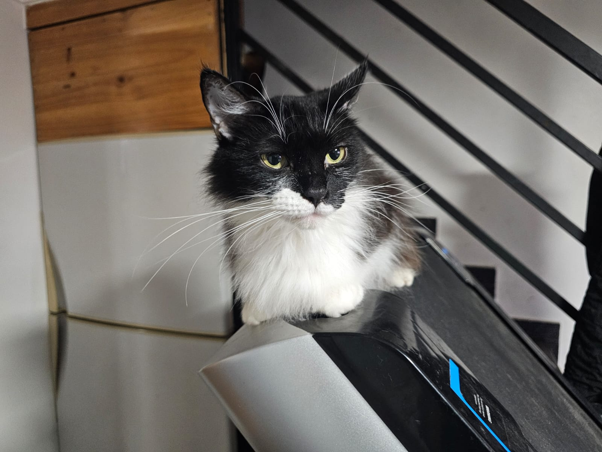
Cucho
5 años - Hembra.
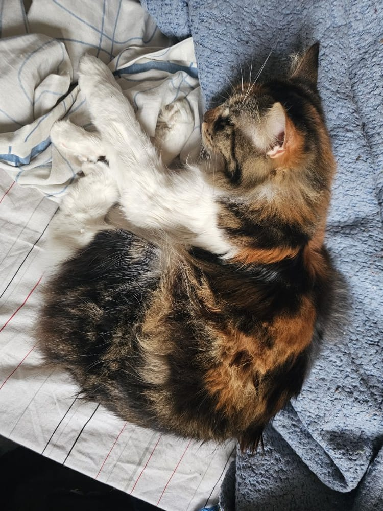
Tigrito
5 años - Hembra.
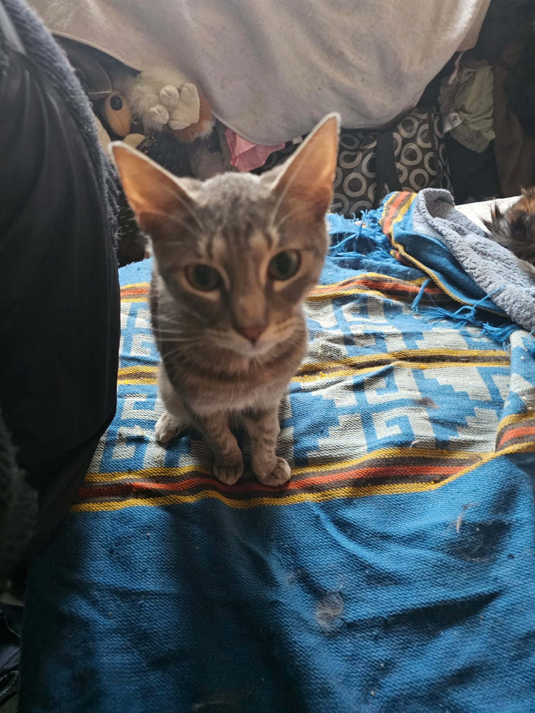
Facundo
3 años - Macho.
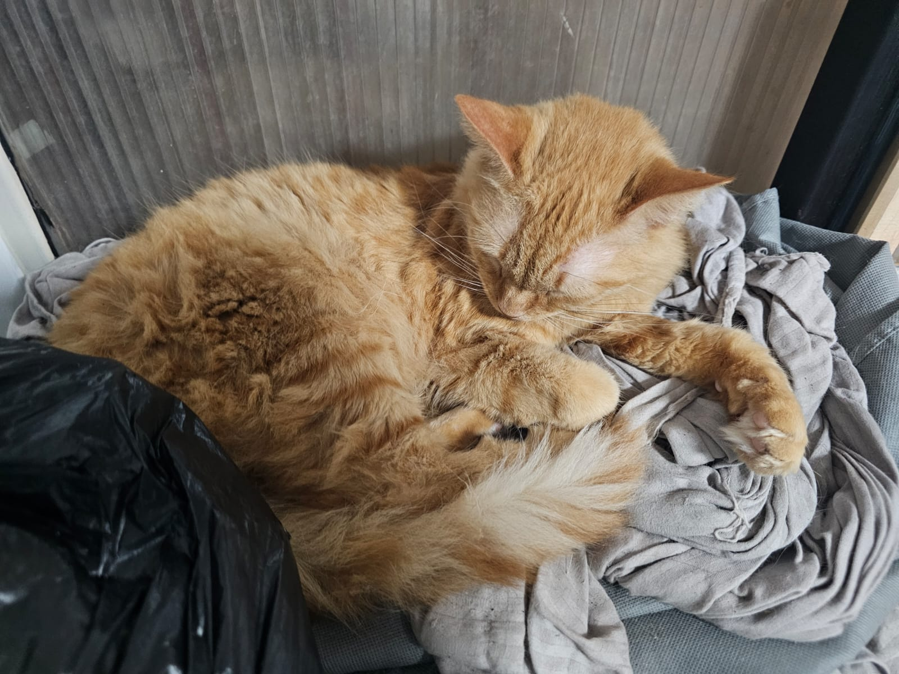
Mamota
3 años - Hembra.
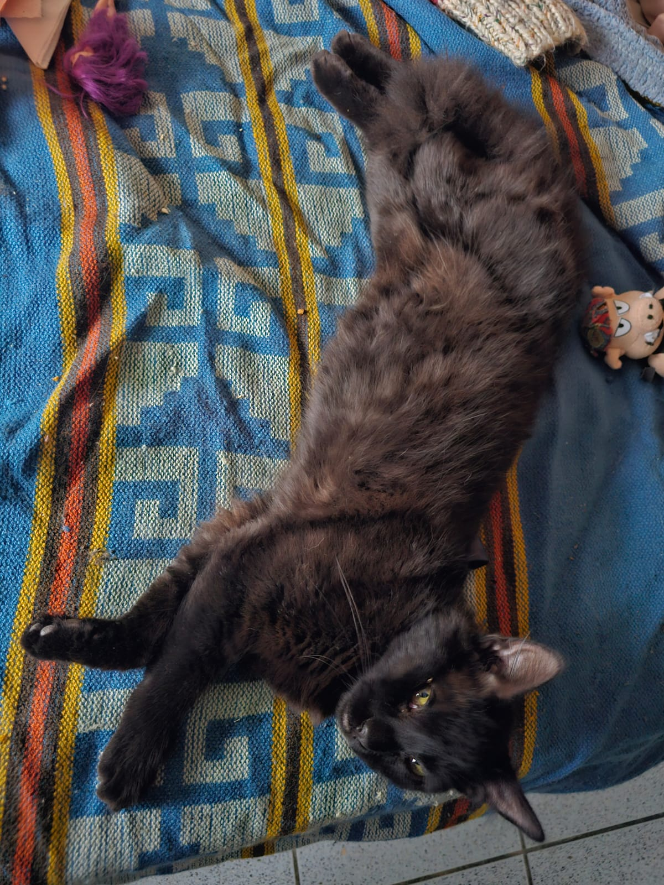
Chucho
2 años - Hembra
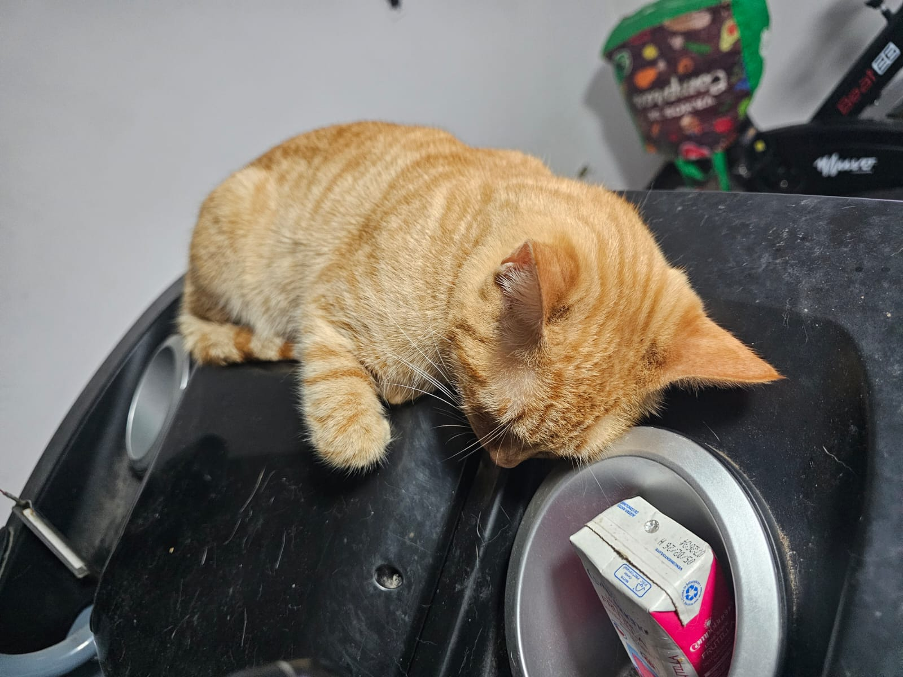
Pelines
3 años - Hembra.